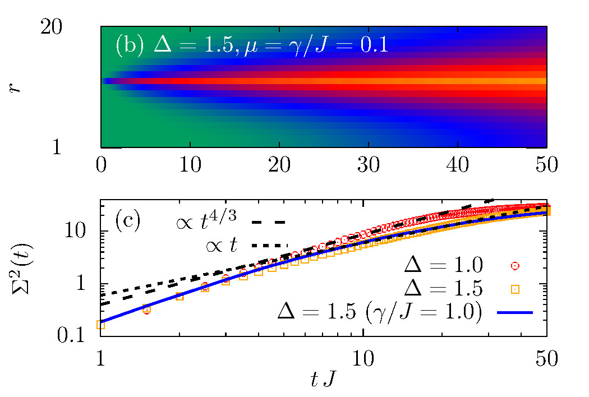
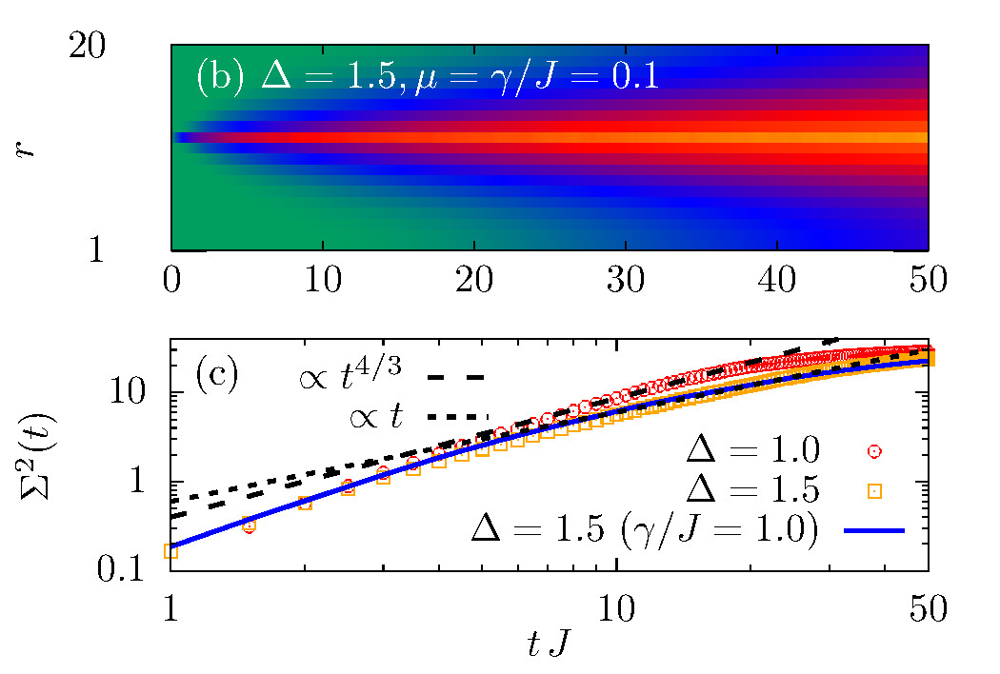

Simulating quantum transport in closed and open quantum systems
20. October 2023
In a previous post, I already discussed my interest in transport phenomena occurring in many-body quantum systems. In a nutshell, the question is how an inhomogeneous distribution of some globally conserved quantity relaxes to thermal equilibrium over the course of the system's time evolution. While one naively expects the emergence of diffusion (and sure enough, diffusion indeed arises in the majority of systems), there also exist systems which feature anomalous types of hydrodynamics. Generally, given the complexity of many-body quantum systems, it is quite challenging to simulate their transport characteristics and to extract precise (quantitative) values for their transport coefficients (e.g. the diffusion constant).
From a practical (or say numerical) point of view, there are essentially two main approaches to explicitly simulate the transport properties of a given many-body quantum systems. The first approach relies on the theory of linear response, where one considers the relaxation of small fluctuations of the system around its equilibrium state. These fluctuations are captured by time-dependent correlation functions evaluated within an equilibrium ensemble, e.g.,
\[ C(r,t) = \frac{\text{tr}[e^{-\beta H}\mathcal{O}_0 \mathcal{O}_r(t)]}{\text{tr}[e^{-\beta H}]}\ . \]
Here, \(\beta = 1/T \) is the inverse temperature, \(H \) is the Hamiltonian of
the system, and \(\mathcal{O}_0 \) and \(\mathcal{O}_r \) are local
operators separated by a distance \(r \). Moreover, the
time argument indicates the time-evolved operator at time \(t \). To
be specific, let's consider a system with conserved total magnetization
\(\sum_\ell S_\ell^z \), and let \(\mathcal{O}_\ell \) be local spin operators
\(S_\ell^z \). Then, in principle, one can infer the transport properties of
\(H \) from the
space- and time-dependence of \(C(r,t) \). In practice, however, it is only
possible to simulate \(C(r,t) \) for systems of finite size (often quite small)
and only for a finite time \(t \). Thus a finite-size scaling
analysis is required in order to estimate the asymptotic transport
characteristics
for systems in
the thermodynamic limit.
In the second approach, the system of interest is coupled at its boundaries to
reservoirs (we here restrict ourselves to one-dimensional systems for
simplicity).
These reservoirs might for instance lead to different temperatures or chemical
potentials at the system's ends, thereby
inducing a nonequilibrium situation and driving a current through the system.
In the long-time limit, a nonequilibrium steady-state will emerge. In
particular, the transport characteristics can then be obtained by studying the
distribution of the conserved quantity as well as by studying how the current
changes upon varying the length \(L \) of the system. For example, in a
perfect conductor (which exhibits ballistic transport), the current will be
independent of \(L \). On the other hand, in the case of diffusion, the current
scales as \(j \propto L^{-1} \). We refer to this
approach of simulating transport properties as the open-system approach.
Naturally, one expects that both these approaches (closed vs open) should
yield the same results (e.g., the same value of the diffusion constant).
However, when studying systems of
finite size numerically, one often observes notable deviations. One reason for
these deviations (in addition to the finite system size) might be that the
open-system approach depends on multiple
parameters, e.g., how strongly the system is coupled
to the reservoirs, as well as the amplitude of the driving due to the baths
(e.g.,
the temperature difference between the left and the right baths). How can we
know then which results we should trust? And how can we be sure that both
approaches asymptotically yield the same answer in the thermodynamic limit?
In a series of two papers (see here and here for details), we tried to
address
this conceptual gap and to explicitly connect the results of both approaches
with each other. As is standard in the literature, the open-system
setup (i.e., the coupling to the bath) is modeled by a Lindblad quantum master
equation, involving suitably chosen jump operators that induce/remove
magnetization,
\[
\mathcal{D} \rho(t) = \sum_j \alpha_j \left(L_j \rho(t) L_j^\dagger -
\frac{1}{2}\lbrace \rho(t),L_j^\dagger L_j\rbrace \right)\ , \]
where \(\rho(t) \) is the density matrix of the system.
In the simplest setting, we can consider a
scenario with only a single bath in the middle of the system (see below),
e.g.,
\[
L_1 = S_{L/2}^+\ ,\quad \alpha_1 = \gamma(1+\mu)\ , \\ L_2 = S_{L/2}^-\ ,\quad
\alpha_2 = \gamma(1-\mu)\ , \]
where for \(\mu > 0 \) excess magnetization is induced, which is then
transported through the system.

In order to make a connection between the Lindblad framework and the
equilibrium correlation function written above, we choose to unravel the
Lindblad equation in terms of stochastic quantum trajectories. These
trajectories require the time evolution of pure states (as opposed to the mixed
state \(\rho(t) \) in the Lindblad equation) with respect to an effective
non-Hermitian Hamiltonian, as well as the application of jump operators to
these states at randomly chosen times. Averaging over sufficiently many such
trajectories then recovers the dynamics of the open system. Moreover, at time
\(t = 0 \), the ensemble of pure states has to be chosen is a way that
correctly represents the initial density matrix \(\rho(0) \). In our case, we
consider a
system that is initially in equilibrium at formally infinite temperature, which
corresponds to choosing completely random pure states for the stochastic
unraveling.
The randomness of the pure initial states in the stochastic unraveling enters
as a key ingredient for our derivation. We can use this
randomness, in combination with the concept of quantum typicality (see, e.g.,
here for an introduction to
typicality), in order to connect the pure-state trajectories to equilibrium
correlation functions. In particular, we show that in the limit of weak
system-bath coupling and weak driving, the dynamics of the open system can be
written as a superposition of closed-system linear-response correlation
functions.
This novel connection between open-system and closed-system dynamics has
conceptual as well as practical consequences. On one hand, it provides a nice
theoretical foundation that both numerical approaches (linear response vs
Lindblad) will yield the same transport behavior, at least when the
involved parameters are chosen appropriately. On the other hand, it is
important to note that the evaluation of linear-response correlation functions
is numerically much less costly than a full stochastic unraveling. Therefore,
when interested in the dynamics of weakly coupled/driven open quantum
systems, the superposition of closed-system correlation functions that we
derived in the paper provides a more efficient simulation method.
If you are interested in more details, feel free to check
out our publications or shoot me an email.

